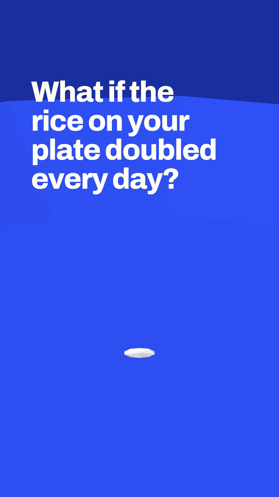
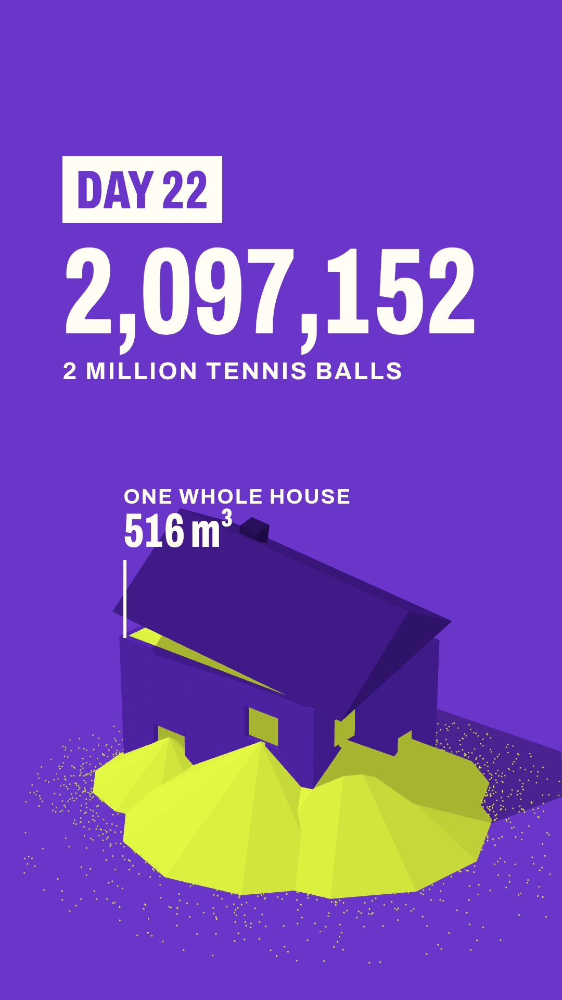
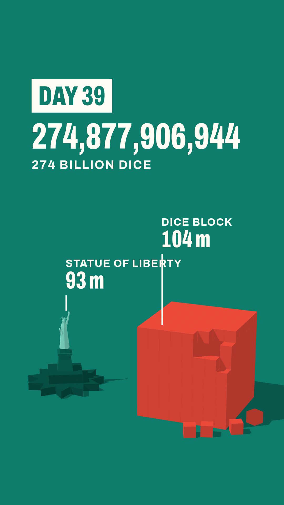
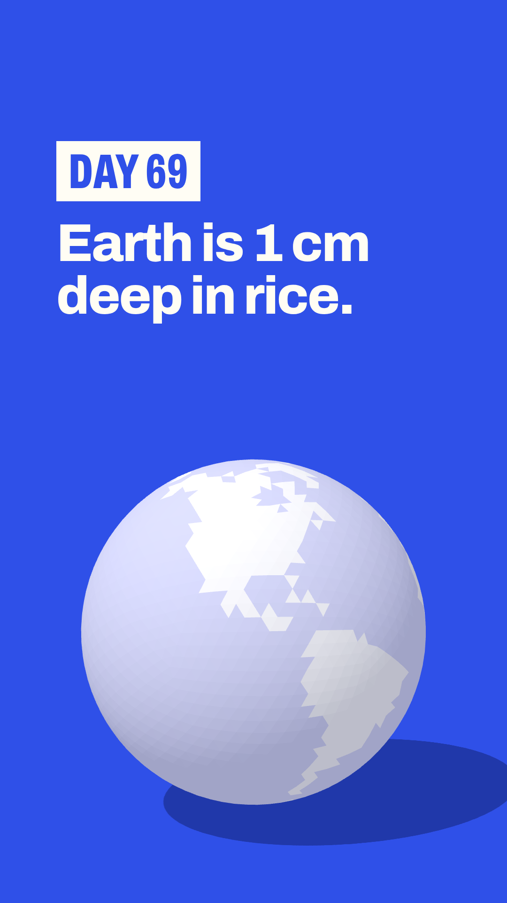
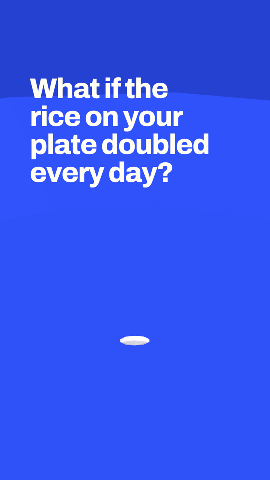
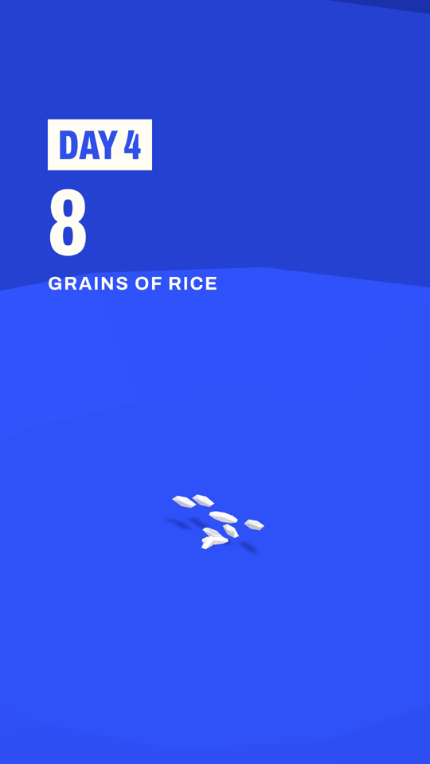
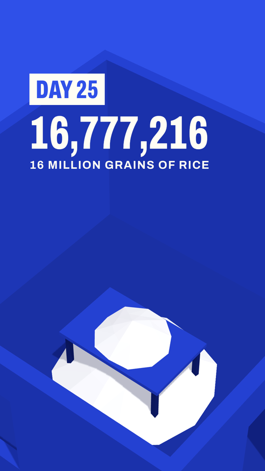
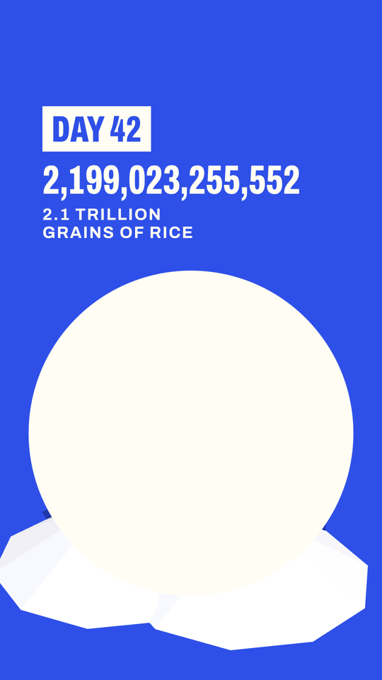
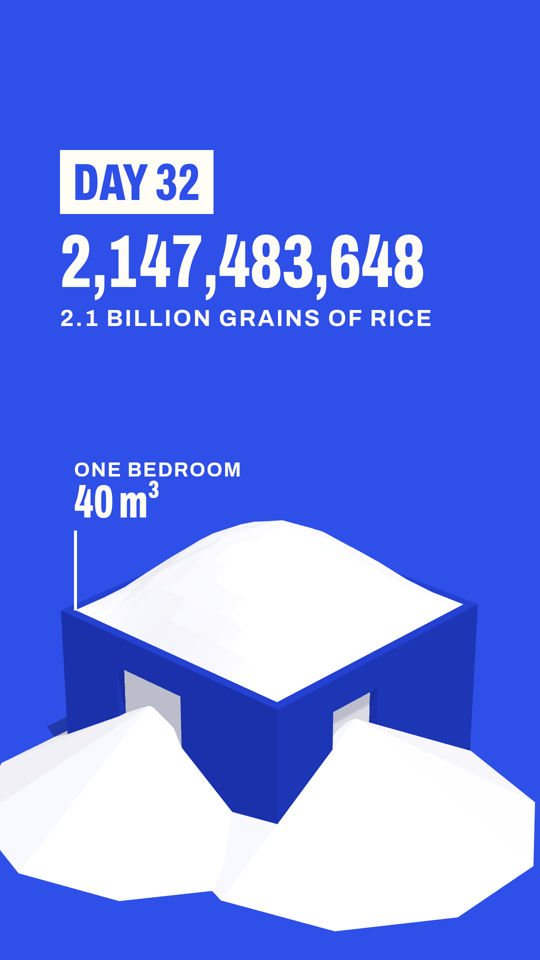
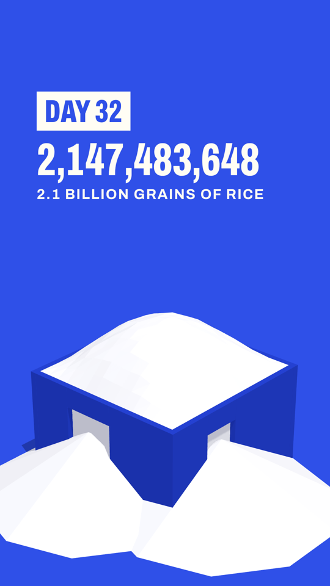

STYLE BOARD · REVISION 1
What If
It Doubled
One everyday object. It doubles every day. The camera keeps backing away until the number stops meaning anything and the picture takes over.
Working name: What If Berlipat. English first for a global audience, 1080 × 1920, 20–40 s, readable with the sound off. All frames below are independent studies with illustrative copy, not an episode.
Worlds and heroes one hue per episode in five values; the object brings the only other colour
WorldCOBALTBackdrop #2F50E8
Mid#2440C4
Dark#1A2F99
Deep · shadow#111F6B
Light#9DAEFF
WorldPLUMBackdrop #6A35C9
Mid#5527A8
Dark#401C82
Deep · shadow#2A1159
Light#C3A6F7
WorldPINEBackdrop #0E7C6B
Mid#0B6557
Dark#084D43
Deep · shadow#05332D
Light#86D8C6
Hero · rice#FFFDF4
Hero · tennis ball#D9F23C
Hero · dice#F4493B
A new episode may add a world or a hero colour. It may not put two hues in the world, shade with gradients, or give the object a face. Type is always paper #FFFDF4.
Type Archivo variable, two widths, nothing else
Question and payoff · weight 800 · width 100 · 112 px · tracking −0.03em
What if the rice on your plate doubled every day?
Counters · weight 800 · width 62 · tabular · day 104 px · count 96–236 px fitted
DAY 22
2,097,152
2 million tennis balls
Four studies hook · mid scale · landmark comparison · payoff




Scale ladder an episode picks four or five rungs and its own comparators; no two episodes share a set
1
TableThe object alone on its surface. Single items drawn and counted.2
RoomBathtub, fridge, bedroom, shipping container.3
BuildingHouse, Olympic pool, Boeing 747, football pitch.4
LandmarkStatue of Liberty, Eiffel Tower, Great Pyramid, Burj Khalifa.5
CityCentral Park, Manhattan, Paris inside the ring road.6
CountryOne country outline covered to a stated depth.7
PlanetEarth, the Moon, the distance to the Sun.Motion poses from the 14 s motion preview






Rules identity stays; everything else changes per episode
Frame
- Type zone: x 120–888, y 300–800. No hero colour enters it.
- Object anchored at 70–72% height. Tags stay in x 120–888, or 120–780 below y 840.
- Flat-shaded low-poly, one key light, one hard contact shadow.
- No gradients, glow, particles, outlines, textures or faces.
Numbers
- Day 1 is one item. Day d is 2^(d−1), shown exactly, never rounded.
- The unit line names the size in words from a million up.
- Every tag carries a real measure and a saved source.
- The payoff day is whatever the arithmetic gives.
Sound
- No narration. Dense sound effects lead the mix.
- One dry tick per day, pitched up as days shorten.
- The object's own material sound, growing with the count.
- A hit on each scale jump and a stamp on each tag; no repeated takes.
- Music bed thin and under −24 LUFS; silent on the payoff.